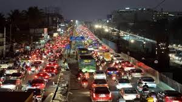
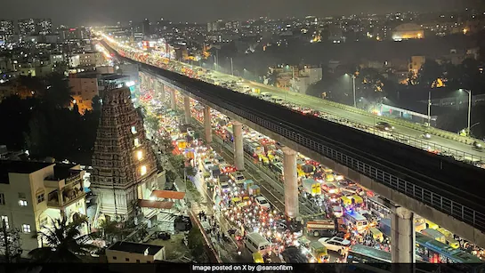

Bangalore Traffic

Bangalore Traffic Alert: The city faces severe traffic congestion today due to ongoing road construction and heavy rainfall.
Commuters are experiencing long delays on major roads, including Outer Ring Road and MG Road.
Authorities urge citizens to plan travel carefully and use public transport wherever possible.
Heavy Traffic Areas in Bangalore

Bangalore is known for heavy traffic, especially during peak hours.
Major congested areas include MG Road, Koramangala, Whitefield, and Silk Board Junction.
IT hubs and commercial streets often face slow-moving traffic due to high vehicle density.
Public transport and flyovers help, but traffic jams remain a daily challenge.
How to Aviod Heavy Traffic in Bangalore?

To avoid heavy traffic in Bangalore, use **public transport** like metro and buses.
Travel during **off-peak hours** or use apps** to find faster routes.
Carpooling, flexible work hours, or walking/cycling for short distances also helps.
Big Basket Your One-Stop Online Grocery Store

"Big Basket makes grocery shopping easy and convenient. Get fresh fruits, vegetables, dairy, and everyday essentials delivered straight to your doorstep – saving you time and effort!"
.jpg)
"At Big Basket, we bring you the freshest fruits and vegetables, high-quality dairy products, and premium staples. Choose from a wide range of organic, farm-fresh, and branded items for all your daily needs."
"Enjoy exciting weekly deals, festive discounts, and special membership offers at Big Basket. Save more on your favorite products while enjoying the convenience of home delivery."
Branch Details
Open Timings :-9:30am-5:00pm
Contact US:-7981543320
Address :-Gandhi Road ,Punganur